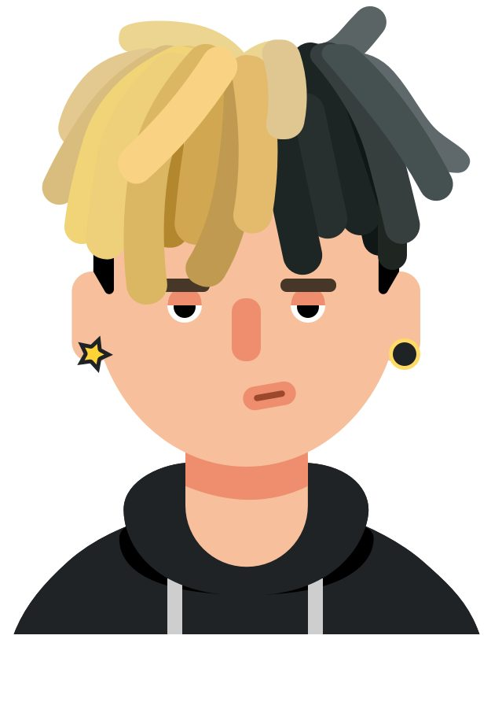
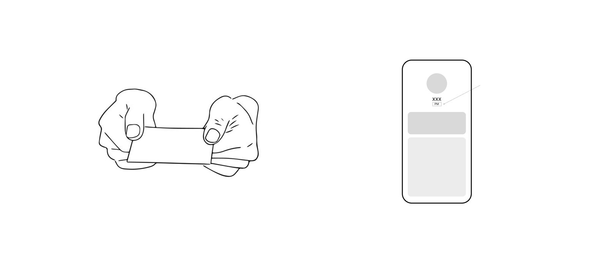

2024 · Huawei User Center Design · Platform Designer
Huawei
A unified design language for five B2B apps — and the first time AI entered the design process.
UI/UXData-DrivenCross-Team
🔒 Some product designs and data specifications shown here have been generalised or omitted for confidentiality. If you'd like to chat and learn more, please email me.
A unified design language for 5 B2B apps
As a design intern embedded in Huawei's B2B department, I proposed design improvements grounded in real user behaviour — across three projects covering user identity, structural optimisation, and cross-app consistency.
Presenting research findings to the product team
5
B2B apps in scope
4
Professional roles studied
3
Tasks delivered
2×
Data + interview methodology
Task 01 · Start from the big question
In B2B, identity is everything — yet on most platforms, users are reduced to a name and a job title. How do you bring offline trust online without overcomplicating the product?
Offline — professional attire, business cards: natural ways to signal who you are and establish trust at first glance. Online — a name, a small job title: no way to show expertise, authority or warmth, leaving interactions feeling impersonal.
The problem
An app often serves multiple professional roles simultaneously, whose needs vary greatly. My product team and I analysed user types and typical interaction scenarios, and two findings emerged: users' relationship to trust varies greatly by role, and the information they need to display changes with the scenario.
The goal
Most B2B platforms are straightforward and restrained, prioritising efficiency over expression. A good online experience should preserve, rather than strip away, the trust and emotional connection people have offline — bringing that sense of connection back without adding complexity.
Use AI to generate visual materials so the credible visual language of each profession reads at a glance, instead of being buried in metadata
Let users switch between company-oriented and personal-oriented modes depending on the scenario
Methodology
First-hand research — through workshops and user interviews, I identified key identity-verification scenarios: first meeting, internal collaboration, client meetings. Secondary research — how "trust" is visually established across professional contexts, and the tension between genuine ability and social stereotype that shaped our subsequent design choices.
Delivery
Four identity cards across two qualification levels and two card formats — a new ID card and an AI avatar system covering multiple scenes. Presented to the product team across four occupations and two card types compatible with all five apps, helping users build a stronger first impression and faster trust online.

The four professional roles the identity system was designed around
What I learned: in B2B design, "feeling" is not optional — it determines whether a tool is tolerated or trusted. Most B2B platforms underestimate this.
Task 02 · Structural optimisation of B2B web platforms
In the second phase, I moved to a large-scale enterprise-level web system serving users with multiple roles. This phase focused on structural design — simplifying information hierarchy and improving efficiency based on real behavioural data and user interviews.
Methodology
Behavioural data — click-through rate, dwell time, bounce rate. User interviews — what's convenient, what's confusing, what do users expect.
Four behavioural patterns
An evidence-based classification that replaced intuition with a data signal and behavioural hypothesis for every suggestion.
Clear signal — low click-through, low dwell time, high bounce: a candidate for repositioning or removal
Mixed signal — high clicks, short dwell: often accidental clicks or fast recognition that "this isn't it" — usually fixed with clearer labelling
Buried value — low clicks, long dwell: the feature is valuable but hard to find, so fix visibility, not the feature

The behavioural-pattern framework used to turn raw analytics into design decisions
Task 03 · Cross-application consistency
Alongside the previous two projects, I maintained design consistency across all five B2B applications — analysing each app's business structure, identifying inconsistencies in shared components, and aligning the design team on a unified standard. This work is quiet — it doesn't produce dramatic before/after comparisons — but it's the foundation that makes everything else feel coherent.
3 things I took from Huawei
Industry understanding — B2B users aren't "me," they're "me in a certain role." Before the role is defined, every UI decision is guesswork.
AI and design — AI is a possibility generator: it let me generate dozens of career-identity directions in an hour, work that used to take a week, without replacing design judgment.
Data vs. intuition — high click-through with short dwell time doesn't equal satisfaction. Behavioural data tells you what happened; interviews tell you why. Both are indispensable.